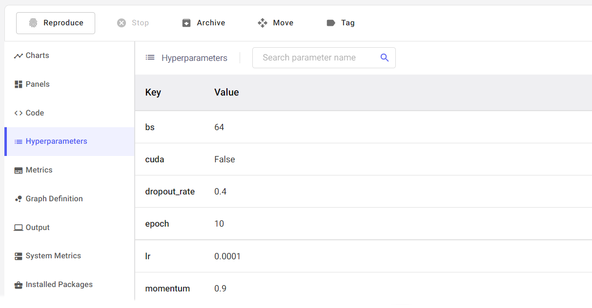

Logging your experiment with UETAI¶
It might feel strange at first, but everything in uetai is exactly the same as there is in your favorite tracking experiment framework.
In this tutorial, we will show you how to log your experiment with uetai
using CometLogger, with other dashboard you can use exactly the same syntax.
Tip
With Comet ML, you can go to https://www.comet.ml/site/ to see your logged experiment.
Initialize experiment¶
Initialize your experiment with uetai.logger
from uetai.logger import CometLogger
logger = CometLogger(project_name='my-project', api_key='my-api-key')
Note
If you don’t pass API and your environment variable doesn’t include any of them, it (the logger) will ask for your API key.
Logging parameters¶
Every experiment usually come up with a set of parameters. Logging them using
log_parameters, passing value should be a Dict[str, Any] or a
Namespace:
# log Dict
logger.log_parameters(
{
'bs': 64,
'cuda': False,
'dropout_rate': 0.4,
'epoch': 10,
'lr': 0.0001,
'momentum': 0.9,
}
)
# or Namespace
logger.log_parameters(args_parser)
The hyperparameters will be logged after the run is finished. Find the it in the hyperparameters tabs.
Logging with log()¶
We provided the same API syntax for all dashboard that we supported. These API is built based on original’s API and has been carefully validate input.
Logging metrics¶
Logging metric wherever needed by log(). Metrics are in form of pair of
key, val which value is a float.
# train loop
for epoch in range(epochs):
# ...
logger.log({
'train/loss': loss, # float
'train/acc': acc,
}, step=epoch)
Logging image¶
log() receives a image type object, which can be PIL.Image, a
torch.Tensor, a numpy.ndarray or path to existed image.
Important
Dimension of the image in Tensor and ndarray are reversed.
Tensor input should be (C, H, W) and ndarray is (H, W, C).
logger.log({'image path': "path/to/image.png"})
# Tensor image shape (C, H, W)
rand_ts = torch.randn(1, 16, 16) * 255
logger.log({'tensor rand image': rand_ts}, step=epoch)
# ndarray image shape (H, W, C)
rand_np = np.random.rand(16, 16, 1) * 255
logger.log({'numpy rand image': rand_np})
from PIL import Image
img = Image.open("path/to/image.png")
logger.log({'PIL image': img}, step=epoch)
Logging text¶
A text can be logged alone or with its metadata in form of
Dict[str, dict] or str where key is the text content and value
is a its metedata.
logger.log('hello world')
metadata = {
'topic': 'random',
'date': '2020-01-01',
'author': 'me',
}
logger.log('hello world #2', metadata)